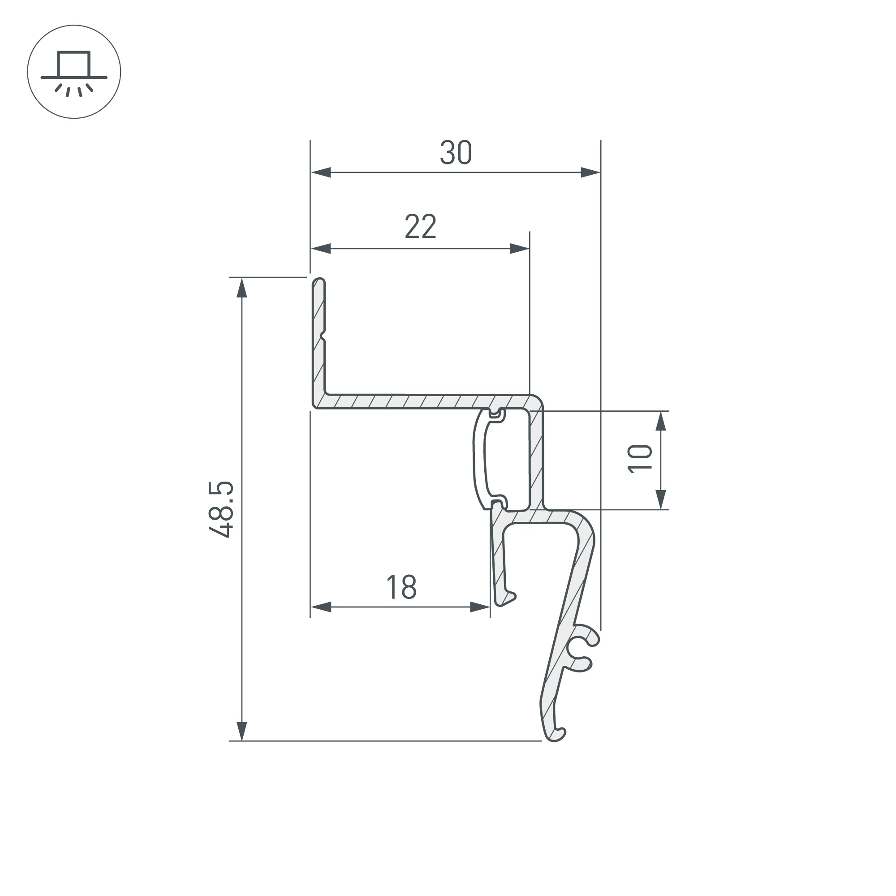
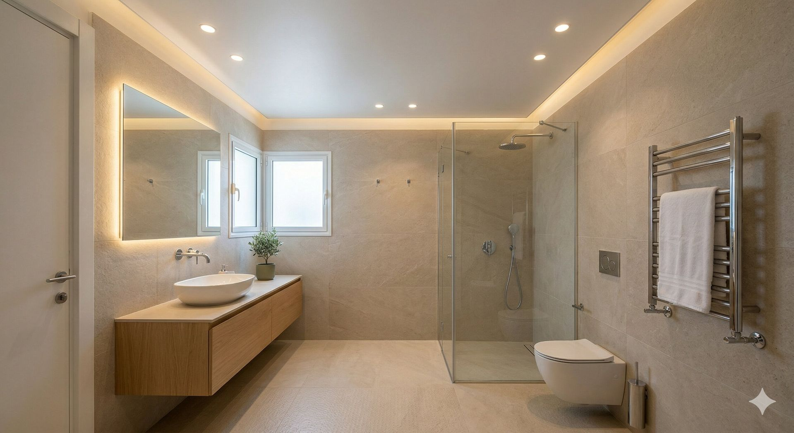
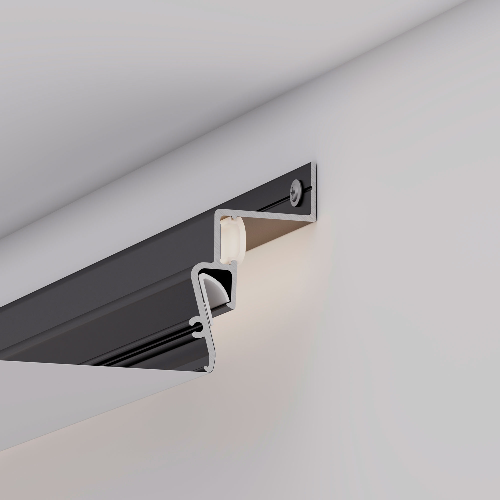
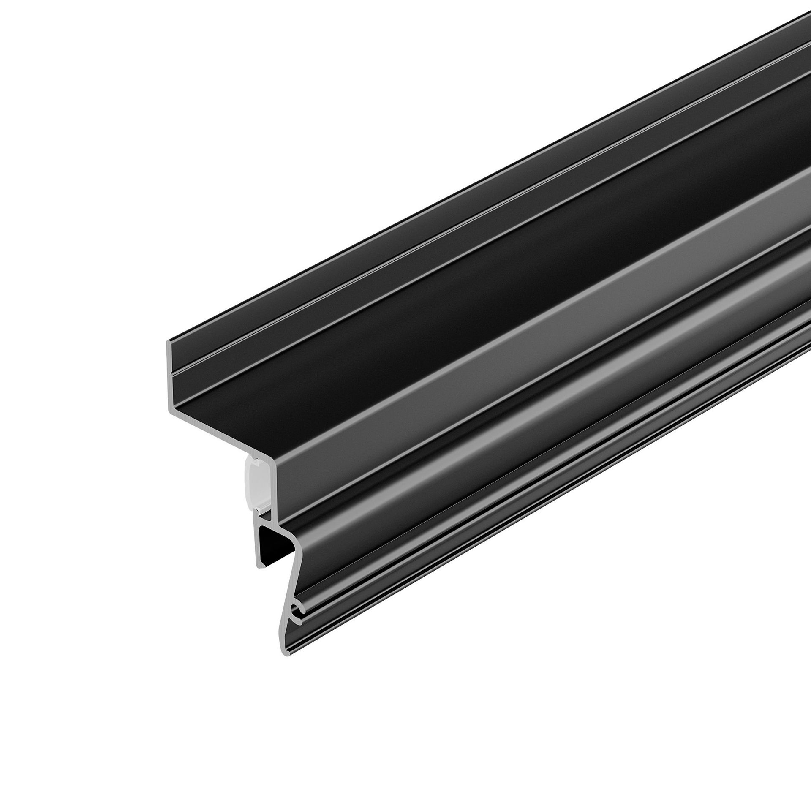

מה זה "פסים מרחפים" ו"תקרה צפה"
כשאומרים תקרה צפה, תקרה מרחפת, או פסים מרחפים — מדברים על אותו אפקט: תקרה שנראית כאילו היא תלויה באוויר, ניתקת מהקיר, עם קו אור עדין שמציף את הרווח בין התקרה לקיר.
האפקט מושג על ידי פרופיל שמוטמע בתוך הקיר — ולא מוצמד אל פניו. בין גוף התקרה לקיר נשאר רווח של 10–20 ס"מ. בתוך הרווח מותקנת רצועת LED שמאירה כלפי מעלה ויוצרת קו אור רך שמקיף את כל החלל. התקרה עצמה היא תקרה מתוחה רגילה — הרווח הוא מה שיוצר את האשלייה.




זוהי טכניקת הנמכת תקרה עם קו אור, ללא גבס, ביום התקנה אחד.
למה בוחרים בפסים מרחפים
אנשים שמחפשים פסים מרחפים רוצים בדרך כלל אחת משלוש תוצאות: אפקט ויזואלי חזק שמרחיב את החלל, תאורת אווירה שאינה גלויה לעין, או מראה ארכיטקטוני נקי שנראה כאילו התכנן אדריכל.
פסים מרחפים נותנים את כולם בפעולה אחת:
עומק ויזואלי: הרווח בין התקרה לקיר יוצר מרחק שנראה גדול מכפי שהוא. החדר מרגיש גבוה ומרווח יותר.
תאורת אווירה מוסתרת: קו האור מגיע מבפנים — לא מנברשת, לא מספוט. הוא נראה כמו חלק מהאדריכלות, לא כגוף תאורה.
מראה שלם: בסלון, שינה, או לובי — פסים מרחפים הופכים תקרה רגילה לאלמנט עיצובי מרכזי.
שילוב גימורים ותאורה
פסים מרחפים עובדים עם כל גימור תקרה מתוחה, וכל אחד יוצר אפקט שונה:
מבריקה — משקפת את קו האור ומכפילה אותו. האפקט הדרמטי ביותר — תקרה שנראית כמו מים. לסלונים ולחדרים גדולים.
סאטן — ברק עדין שמחזיר את האור בצורה רכה. בין מבריקה למט — נותן עומק ללא חוזקה מלאה.
מט — ניגוד מאוזן: תקרה שקטה שמאפשרת לקו האור לבלוט לבד. נפוץ בחדרי שינה ובחללים מינימליסטיים.
טמפרטורת הלד: 2700K (חמים מאוד) לאפקט רגוע ואינטימי. 3000K לאפקט נקי ומואר. 4000K כמעט ולא משמש בפסים מרחפים — קר מדי לאפקט.
פסים מרחפים לפי חדר
סלון
השימוש הנפוץ ביותר. פסים מרחפים בסלון יוצרים את האפקט הוויזואלי החזק ביותר — הרחבה מדומה של הגובה, קו אור שמגדיר את הפריפריה, ואווירה שנראית כמו מלון. עם מבריקה — יוקרה. עם מט — אלגנטיות שקטה. תקרה לסלון.
חדר שינה
LED חמים (2700K) בפסים מרחפים יוצר תאורת לילה אינטימית שמחליפה מנורת לילה. ניתן לשלב עם מסילה מגנטית לתאורת קריאה מכוונת. תקרה לחדר שינה.
מסדרון וכניסה
המסדרון הוא אחד החללים שמרוויחים הכי הרבה. חלל צר ואפרורי הופך לאלמנט עיצובי מרשים — הקו הרציף של האור לאורך כל המסדרון יוצר תחושת עומק ואורך. לובי וכניסה.
לובי, קבלה ומרחב עסקי
ברמת הרושם הראשון — פסים מרחפים בלובי הם מהאלמנטים העיצוביים החזקים ביותר. מסחרי, ייצוגי, ומרשים. תקרה מתוחה למשרד.
מטבח
פסים מרחפים במטבח פחות נפוצים — בגלל גובה התקרה הנמוך לרוב, ובגלל שמטבח דורש תאורת עבודה ישירה על משטח הכנה. ניתן לשלב פסים מרחפים באזור הפינה עם ספוטים מרכזיים. תקרה למטבח.